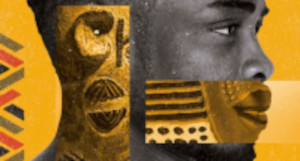

A arte africana e sua riqueza
Arte africana na história
A arte africana representa os usos e costumes das tribos africanas. O objeto de arte é funcional e expressam muita sensibilidade. Nas pinturas, assim como nas esculturas, a presença da figura humana identifica a preocupação com os valores étnicos, morais e religiosos. A escultura foi uma forma de arte muito utilizada pelos artistas africanos usando-se o ouro, bronze e marfim como matéria prima. Representando um disfarce para a incorporação dos espíritos e a possibilidade de adquirir forças mágicas, as máscaras têm um significado místico e importante na arte africana sendo usadas nos rituais e funerais. As máscaras são confeccionadas em barro, marfim, metais, mas o material mais utilizado é a madeira. Para estabelecer a purificação e a ligação com a entidade sagrada, são modeladas em segredo na selva. Visitando os museus da Europa Ocidental é possível conhecer o maior acervo da arte antiga africana no mundo.
História
As origens da história da arte africana está situada muito antes da história registrada. A arte africana em rocha no Saara, em Níger, conserva entalhes de 6000 anos.[1] As esculturas mais antigas conhecidas são dos Nok cultura da Nigéria,500 d.C.. Junto com a África Subsariana, as artes culturais das tribos ocidentais, artefatos do Egito antigo, e artesanatos indígenas do sul também contribuíram grandemente para a arte africana. Muitas vezes, representando a abundância da natureza circundante, a arte foi muitas vezes interpretações abstratas de animais, vida vegetal, ou desenhos naturais e formas. Métodos mais complexos de produção de arte foram desenvolvidos na África Subsaariana, por volta do século X, alguns dos mais notáveis avanços incluem o trabalho de bronze do Igbo Ukwu e a terracota e trabalhos em metal de Ife|Ile Ife fundição em bronze e , muitas vezes ornamentados com marfim e pedras preciosas, tornou-se altamente prestigiado, em grande parte da África Ocidental, às vezes sendo limitado ao trabalho dos artesãos e identificado com a Família real|realeza, como aconteceu com os Bronzes do Benim